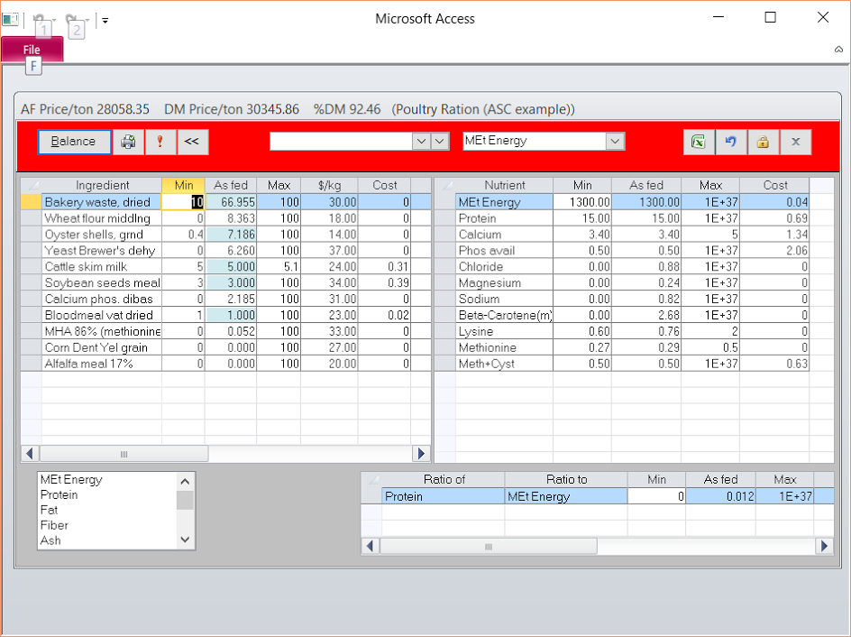
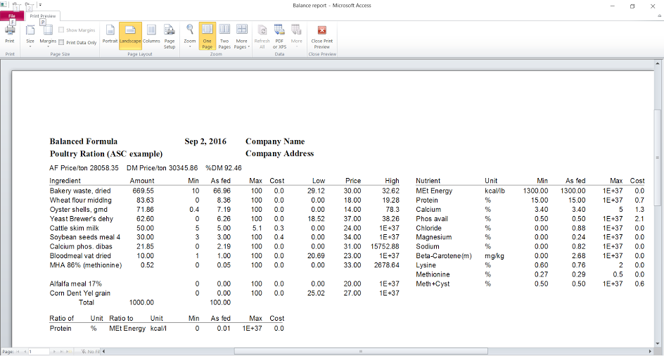

This video demonstration illustrates how to create a new ration with MixitWin. You can also contact us to receive a full featured demo version of the program.
Here is a least-cost poultry ration. The ingredients and their constraints are on the left, the nutrients and their constraints are on the right, and the nutrient ratios and their constraints are at the bottom.
Here is one of several reports for this poultry ration. Reports can be printed or saved as text or doc files. Many reports can also be saved as spreadsheets.
